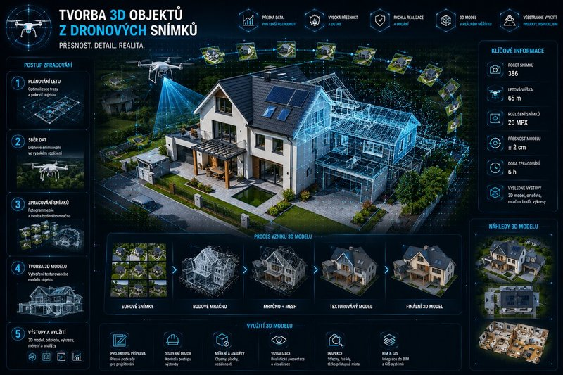
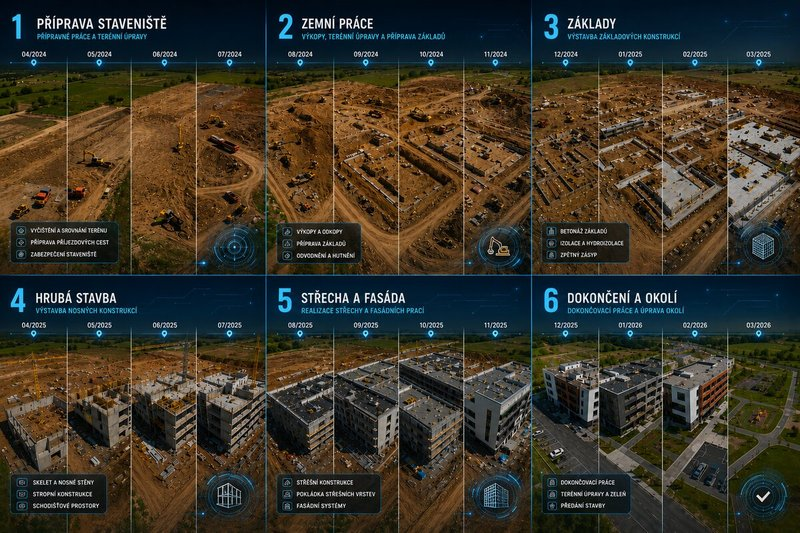
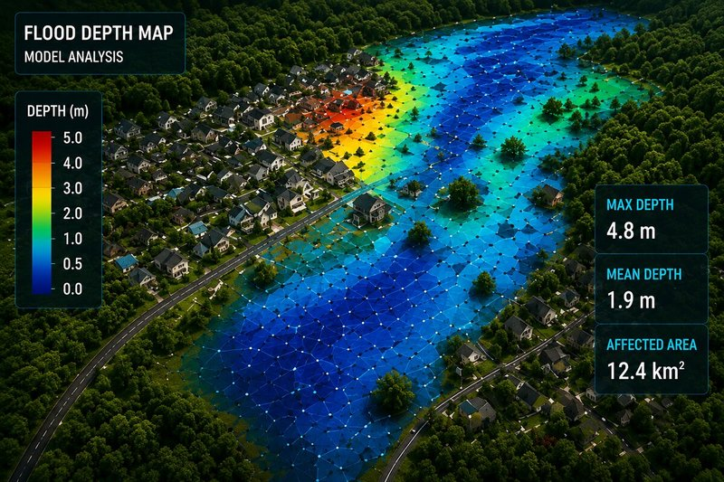
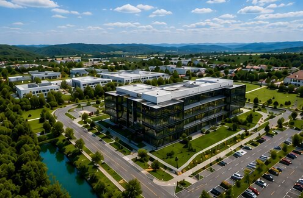

Naše služby
Od sběru dat po finální výstupy — pokrýváme celý proces profesionálního leteckého mapování.

Ortofoto
Georeferencované ortofotomapy s deklarovanou přesností. Ideální podklad pro projekční práce, analýzy i prezentace.

3D Modely
Detailní 3D modely objektů — tvar, struktura i výškové poměry. Nepostradatelné pro vizualizace a analýzy.

Kubatury
Precizní sledování změn v čase — úbytek či přírůstek materiálu. Klíčové pro stavebnictví, těžbu a logistiku sypkých materiálů.

Časosběr
Pravidelné snímkování průběhu projektu — videa, fotografie a tematické mapy od prvního kopnutí po dokončení.

Krizový management
Operativní monitoring při povodních a mimořádných událostech. Data pro rychlé rozhodování složek IZS.

Foto a Video
Letecké fotografie a videa pro web, marketing, sociální sítě nebo prodej nemovitostí. Unikátní perspektiva, která zaujme.